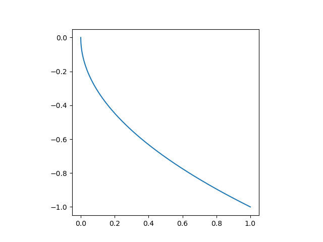

The one dimensional integral that we shall evaluate using monte-carlo methods gives the area of the a quarter of the unit circle. Using this and the fact that the analytical value of the are of a quarter of the unit circle is given as \(\pi/4\), we can find the value of \(\pi\).
\[ I = \int_0^1 f(x,y)\ dx = \int_0^1 \sqrt{1-x^2}\ dx = \frac{\pi}{4} \]
The goal is to understand the strengths and weaknesses of the various monte-carlo methods for the purpose of numerical integration.
Here, we shall test the various algorithms for numerical integration and check their labour ratio.
The crude method is the simplest and most inefficient monte-carlo algorithm. It simply involves generating uniformly distributed random points inside the unit square and counting the ratio of those points that lie within the quarter circle. This gives us the ratio of the area of the square and the circle. Since the are of the unit square is 1, the are of the circle can be deduced directly.
The algorithm involves simply generating uniformly distributed set of points within the range (0-1). The function we want to sample is given as.
\[ \begin{equation} g(x,y) = \left\{ \begin{array}{ll} 1 & \mbox{if } \sqrt{1-x^2} \le 1 \\ 0 & \mbox{if } \sqrt{1-x^2} > 1 \end{array} \right. \end{equation} \]
Then the estimator given below is an unbiased estimator for the integral \(\theta\) for uniformly generated points (\(x_i,y_i\)) within the unit square (\(1,1\)).
\[ \theta = \sum_i^N \frac{g(x_i,y_i)}{N} \]
Functions
def hit_or_miss(p):
(x, y) = p
if np.sqrt(x**2 + y**2) > 1:
return(0)
else:
return(1)
def hit_or_miss_var(inp):
(x, meanpi) = inp
return((x-meanpi)**2)Simulation
nb=24
corrlen=0
npoints=(1 << nb )
npointsall=(1 << nb ) + corrlen
randvalsx = np.random.rand(npointsall);
randvalsy = np.random.rand(npointsall);
pivalslist=np.zeros(npointsall);
# Calculate via MC simul
meanpi = st.mean(map(hit_or_miss, zip(randvalsx,randvalsy)))
pivals = map(hit_or_miss, zip(randvalsx,randvalsy))
meanpilist = meanpi*np.ones(npoints);
varpivals = map(hit_or_miss_var, zip(pivals,meanpilist))
errorpi=np.sqrt(sum(varpivals)/(npoints-1))/np.sqrt(npoints)
# π
exactI=np.pi/4
print(f'meanpi = {meanpi} exact={exactI} \n error={errorpi} errorExact={exactI-meanpi}')
# Resultsmeanpi = 0.785393238067627 exact=0.7853981633974483
error=0.00010023175734353169 errorExact=4.9253298213258745e-06The crude method is the simplest and most inefficient monte-carlo algorithm. It simply involves generating uniformly distributed random points inside the unit square and counting the ratio of those points that lie within the quarter circle. This gives us the ratio of the area of the square and the circle. Since the are of the unit square is 1, the are of the circle can be deduced directly.

The algorithm involves simply generating uniformly distributed set of points within the range (0-1). The estimator for the integral \(I\) is given below.
\[ \theta = \sum_i^N \frac{f(\xi_i)}{N} \]
with f being the function given as shown below.
\[ f(x) = \sqrt{1 - x^2} \]
and \(\xi_i\) is a uniform random number betwee (\(0,1\)).
Functions
def pi_curve(x):
return(np.sqrt(1.0 - x*x))
def pi_curve_var(inp):
(x, meanpi) = inp
return((x-meanpi)**2)Simulation
nb=24
corrlen=0
npoints=(1 << nb )
npointsall=(1 << nb ) + corrlen
randvals = np.random.rand(npointsall);
pivalslist=np.zeros(npointsall);
# Calculate via MC simul
meanpi = st.mean(map(pi_curve, randvals))
pivals = map(pi_curve, randvals)
meanpilist = meanpi*np.ones(npoints);
varpivals = map(pi_curve_var, zip(pivals,meanpilist))
errorpi=np.sqrt(sum(varpivals)/(npoints-1))/np.sqrt(npoints)
# π
exactI=np.pi/4
print(f'meanpi = {meanpi} exact={exactI} \n error={errorpi} errorExact={exactI-meanpi}')meanpi = 0.7854022279396252 exact=0.7853981633974483
error=5.447856099833516e-05 errorExact=-4.0645421769403e-06Stratified sampling involves breaking up the domain (i.e. 0 - 1) into strata and sampling inside individual strata. The estimator for \(\pi/4\) is then given by the following.
\[ \theta = \sum_{j=1}^k \sum_1^{n_j} (\alpha_j - \alpha_{j-1})\frac{1}{n_j}f(\alpha_{j-1}+(\alpha_j - \alpha_{j-1})\xi_{ij}) \]
The variance can be smaller than that of crude monte-carlo if differences between local means is larger than the variance of \(f\) within the stata.

Function
def interval_gen(nint):
return(np.linspace(0,1,nint+1))
def strat_rand(x, a, b):
return( a + x*(b-a) )
def strat_calc(x,
list_npoints_inter,
list_sum_inter,
list_sum_inter2,
list_sum_inter_witha,
inter_list):
idinter = np.searchsorted(inter_list,x)-1
list_npoints_inter[idinter] += 1
list_sum_inter[idinter] += (pi_curve(x))
δa = inter_list[idinter+1]-inter_list[idinter];
list_sum_inter_witha[idinter] += δa * (pi_curve(x))
list_sum_inter2[idinter] += pi_curve(x) * pi_curve(x)
def strat_rand_calc(x, a, b,
list_npoints_inter,
list_sum_inter,
list_sum_inter2,
list_sum_inter_witha,
inter_list):
x = ( a + x*(b-a) )
idinter = np.searchsorted(inter_list,x)-1
list_npoints_inter[idinter] += 1
list_sum_inter[idinter] += (pi_curve(x))
δa = inter_list[idinter+1]-inter_list[idinter];
list_sum_inter_witha[idinter] += δa * (pi_curve(x))
list_sum_inter2[idinter] += pi_curve(x) * pi_curve(x)Simulation
nb = 10
npint = 2
nint = 1 << npint
corrlen=0
npoints=(1 << nb )
npointsall=(1 << nb )
randvals = np.random.rand(npointsall)
print(npointsall)
list_npoints_inter = np.zeros(nint,dtype=int)
list_sum_inter = np.zeros(nint)
list_sum_inter2 = np.zeros(nint)
list_sum_inter_witha = np.zeros(nint)
inter_list = interval_gen(nint)
list_mean_inter = np.zeros(nint)
for i in range(nint):
step = npointsall >> npint
a = inter_list[i]
b = inter_list[i+1]
[ strat_rand_calc(x, a, b,
list_npoints_inter,
list_sum_inter,
list_sum_inter2,
list_sum_inter_witha,
inter_list) for x in randvals[step*(i):step*(i+1)]]
list_mean_inter = [i/j for i,j in
zip(list_sum_inter_witha,list_npoints_inter)]
meanpi=np.sum(list_mean_inter);
varpi = 0.0;
for it in range(nint):
δa = inter_list[it+1] - inter_list[it];
nit = list_npoints_inter[it]
varpi += δa * δa * ( list_sum_inter2[it] - nit * list_mean_inter[it] * list_mean_inter[it] )/(nit * (nit - 1));
errorpi = np.sqrt(varpi)
exactI=0.4180232931306735
exactI=np.pi/4
print(f'meanpi = {meanpi} exact={exactI} \n error={errorpi} errorExact={exactI-meanpi}')meanpi = 0.7831097344059315 exact=0.7853981633974483
error=0.024708860632964468 errorExact=0.002288428991516822The natural next step following stratified sampling is that of importance sampling. In the previous method, we chose the strata arbitrarily, i.e. by inspection of the function to integrate. This was followed by a uniform sampling of points inside each strata. The idea is to break the domain into regions which need to be sampled with more points as opposed to domains where the function is quasi horizontal (i.e. low variance). The more natural way to do this is to adapt the choice of points in a more flexible manner. This is the idea behind importance sampling where we define a custom distribution (\(g(x)\)) which is very close to the original function (\(f(x)\)) that we wish to integrate. The main constarint on the distribution is that it needs to be easy to sample from.
\[ \theta = \int_0^1 f(x)\ dx = \int_0^1 \frac{f(x)}{g(x)} g{x}\ dx = \int_0^1 \frac{f(x)}{g(x)} dG(x) \]
here, \(dG(x)\) is the measure, i.e. the sampling distribution. Note that the distribution \(g(x)\) must be normalized.
\[ \int_0^1 g(x)dx = 1 \]
Invting a distribution,
Function

The above figure shows the distribution function that we shall use. There are many points close to \(x\approx0\) and the points progressively decrease as we approach \(x\approx1\).
Simulation
nb=22
corrlen=0
npoints=(1 << nb )
npointsall=(1 << nb ) + corrlen
randvals = [cdfm1(x) for x in np.random.rand(npointsall)]
# Calculate via MC simul
pivals = [foverg(x) for x in randvals]
meanpi = st.mean(pivals)
meanpilist = meanpi*np.ones(npoints);
varpivals = [pi_curve_var(x) for x in zip(pivals,meanpilist)]
errorpi=np.sqrt(np.sum(varpivals)/(npoints-1))/np.sqrt(npoints)
exactI=np.pi/4
print(f'meanpi = {meanpi} exact={exactI} \n error={errorpi} errorExact={exactI-meanpi}')meanpi = 0.7858500513037664 exact=0.7853981633974483
error=0.0008344871199825027 errorExact=-0.0004518879063181158